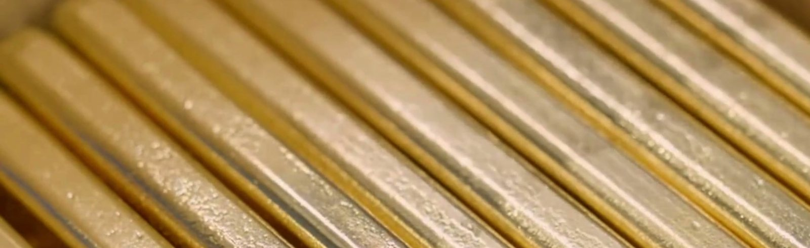
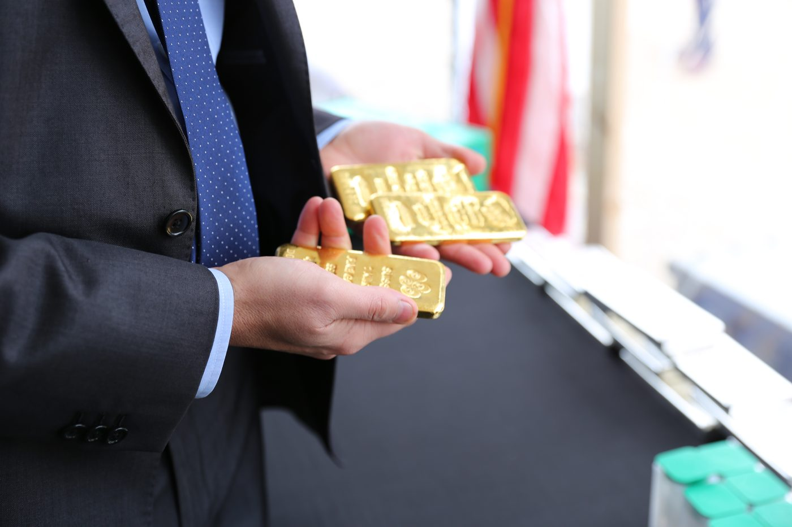

01
State Oversight
The Texas Comptroller of Public Accounts provides oversight to ensure the operator meets the standards established for the program.

The nation's first state-administered precious metals depository — secure, insured storage backed by the oversight of the Texas Comptroller of Public Accounts.
Tangible asset owners deserve a secure, transparent place to store and insure their precious metals. The Texas Bullion Depository leverages significant industry experience, systems, and procedures, while the Comptroller of Public Accounts provides oversight to ensure the operator meets the standards established for the program.
The Texas Comptroller of Public Accounts provides oversight to ensure the operator meets the standards established for the program.
Institutional-grade security and insured storage for precious metals, built on proven systems and procedures with deep industry experience.
Services are provided by Lone Star Tangible Assets of Austin, Texas — keeping Texan precious metals, and taxpayer funds, in Texas.
The Texas Bullion Depository was created when Governor Greg Abbott signed House Bill 483 into law on June 12, 2015 — establishing the nation's first state-administered precious metals depository.
Today I signed HB 483 to provide a secure facility for the State of Texas, increasing the security and stability of our gold reserves and keeping taxpayer funds from leaving Texas.
Greg Abbott · Governor of Texas

Tangible ValueStored in gold The FacilityLeander, Texas
The FacilityLeander, Texas
In HandReal, physical goldState of TexasOfficial commemorative coinsEstablished under Texas law (HB 483) and overseen by the Comptroller of Public Accounts — a level of accountability no private depository can match.